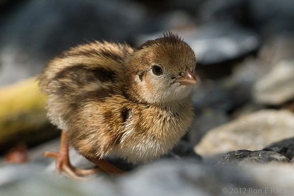

Personal Interests
Hello there! I'm a warm and persistent individual who finds joy in connecting with people and facing challenges head-on.
With a welcoming personality, I strive to make everyone feel comfortable and at ease in my presence.
Whether I'm diving into the pool for a refreshing swim, tending to my beloved pet birds, or delving into the captivating world of Japanese culture,
I embrace my hobbies with passion and dedication.
My Hobbies

- Swimming: Dive into the world of swimming, my ultimate passion. Whether it's gliding through calm waters or embracing the exhilaration of racing against the clock, I find solace and joy in the pool. Swimming allows me to push my physical limits, stay fit, and maintain a strong mind-body connection. The water is my sanctuary, and with each stroke, I feel a sense of liberation and renewal.

- Raising Pet Birds: As an avian enthusiast, I find immense pleasure in raising and caring for pet birds. The vibrant colors, unique personalities, and melodious songs of these feathery companions bring a sense of serenity to my life. From providing a safe and nurturing environment to establishing strong bonds, I wholeheartedly enjoy the responsibilities that come with being a bird owner. Witnessing their playful antics and experiencing their affectionate nature never fails to brighten my day.

- Learning Japanese Culture: Immerse yourself in the captivating world of Japanese culture alongside me. I've dedicated my free time to studying this rich and diverse culture, delving into its history, traditions, and language. With a JLPT-N3 certification under my belt, I have honed my language skills, allowing me to appreciate the nuances of Japanese literature, art, and entertainment. From traditional tea ceremonies to anime and manga, I embrace it all, eager to explore every facet of this fascinating culture.
Back to the main page
Take a look at my thoughts on friendship